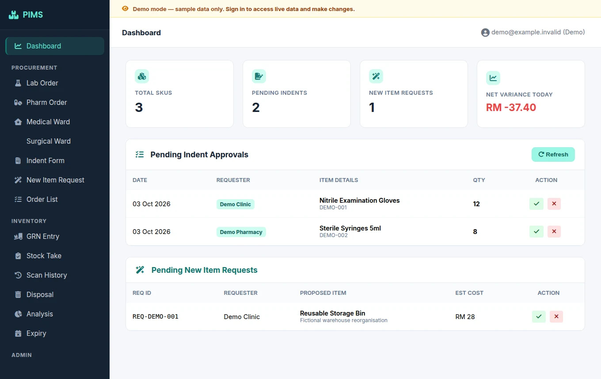
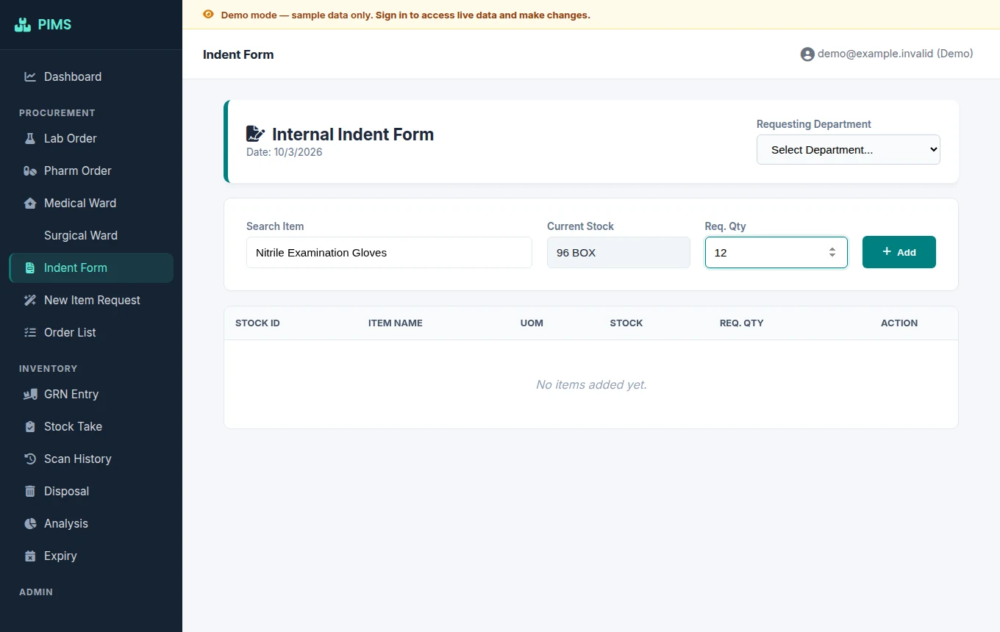
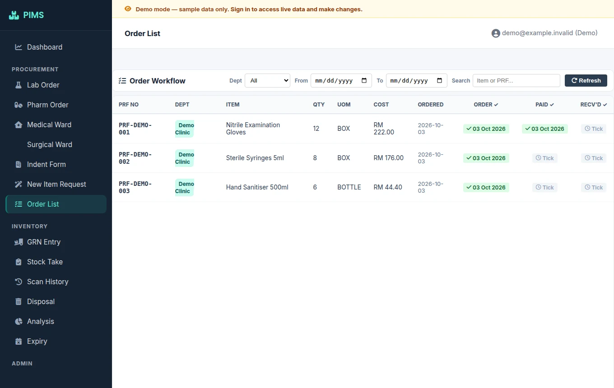

Procura
Inventory, suppliers, reorder planning and purchase orders in one connected application.
Procurement softwareView project: Procura
Give stock requests a clear place to go.
Procurement and inventory workflows for a veterinary hospital, from internal requests to receipt and stock take.
Actual PIMS UI; local fictional sample responses. Screenshot gallery only, not an interactive application.



Screenshot unavailable. Extract the complete preview ZIP with its assets, then reopen this page.
A team needs to request stock, review it and record what arrived without losing the handover between departments.
I built PIMS around internal indents, department purchase orders, approval queues, goods receipt, stock take, disposal and expiry tracking. The system also supports item specification requests and master-data administration.
A Go application serves a single-page web interface and stores workflow data in PostgreSQL. It reads current stock quantities from Procura’s SQLite database without keeping a second editable stock balance.
View source on GitHubThese are genuine interface captures rendered with local fictional responses, not a live application. PIMS does not change Procura-owned stock quantities. PDF generation for GRNs, PRFs and analysis reports is not currently included.
If this is close to a problem you have, describe the work—not just the features you want.
Discuss your project